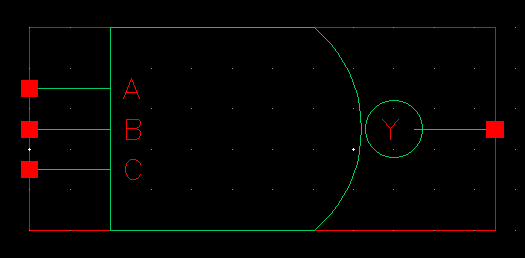
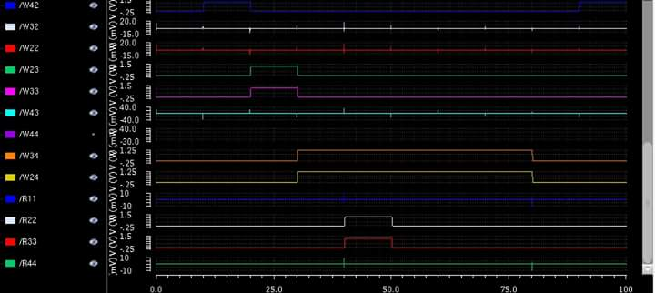

4 Bit Write and Read Memory
A Project Using Cadence Virtuoso
Schematic Diagram of NOT Gate

Symbol of NOT Gate

Schematic Diagram of NAND Gate

Symbol of NAND Gate
Making AND Gate using NAND Gate & NOT Gate

Symbol of AND Gate

Schematic Diagram of 3 input NAND Gate
Symbol of 3 input NAND Gate

Schematic Diagram of OR Gate
Symbol of OR Gate

Schematic Diagram of D Latch
Symbol of D Latch
Schematic Diagram of 1 Bit Write & Read Memory
Symbol of 1 Bit Write & Read Memory
Output 1
Schematic Diagram of 4 Bit Write & Read Memory
Symbol of 4 Bit Write & Read Memory
Output 2
Output 3
Output 4
